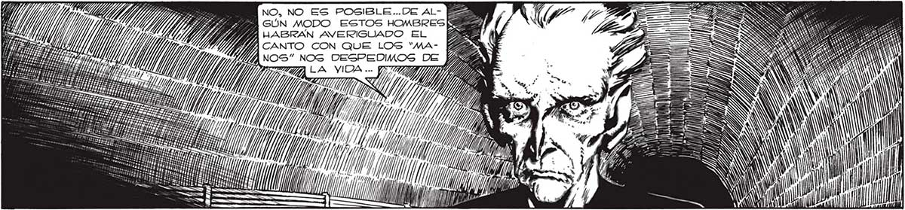

NO, NO ES POSIBLE..DE AL- PY PEA GÚN MODO ESTOS HOMBRES 24 BY 4 HABRAN AVERIGUADO EL Seo Y BIA CANTO CON QUE LOS “Ma- B VIVA NOS" NOS DESPEDIMOS DE Y y 7 "Pa 0), / A E ÁS > : pa A = > ¡ PERO ES INADMISI- YA ENTIENDO... LO QUE LOG HOMBRES W BLE QUE LOS ELLOS QUIEREN ES GANAR TIEMPO... SON AGSAN ME ENGAÑEN! ¡EL TUTOG PERO LOG TENGO EN MI PODER... WO MANO” QUE DIRIGIO EL ATAQUE CONTRA ¡ESCUCHEN, HOMBRES! 443 ¡LA TRETA NO LES HA SY) RESULTADO! i MI PACIEN: 444 CIA SE AGOTO, Y AHORA [2% MISMO UN GURBO LLENW RIVER PLATE TIENE GARA HASTA USTEDES! AN QUE ESTAR vivo! > (M pu) y É Al Y) E AIN a rg hi : 7 A MO E Y 1% 1) > | 7 l / , ' "e. !s ' , OnouLaron LOS DEDOS, NO INSISTAS EN ENGAY VI ALGUNOS ROZANDO ÑARTE A TI MISMO, MAYA LAS TECLAS FATALES. NO”... ¿POR QUE NO ES... DEL MONSTRUO- O PERAS A SABER H4GA A Gx TA DONDE LLEGA COMPRENDI QUE > NUESTRO CONOCIMIENINTENTO, Diz FAME- > Y => GECRETO, "MANO... LLI HABIA FRACA- PANAS SADO. NO HABIA PATA a > OE - SA LOGRADO IMPRE- MAZA SIONAR AL 'MANO?. o ON : > L> INVEROSÍMIL MANO VOLVIO A PLANEAR .— Sy .. SOBRE EL TECLADO. EL TECLADO POR “ Piro NO LLEGARONNA MEDIO DEL CUAL DIRIGIA LA ACOMETIDA... A OPRIMIRLASG. $e 239
